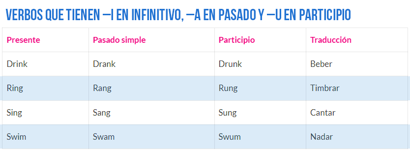
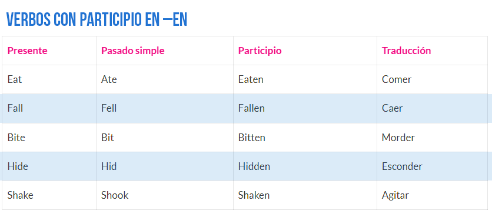
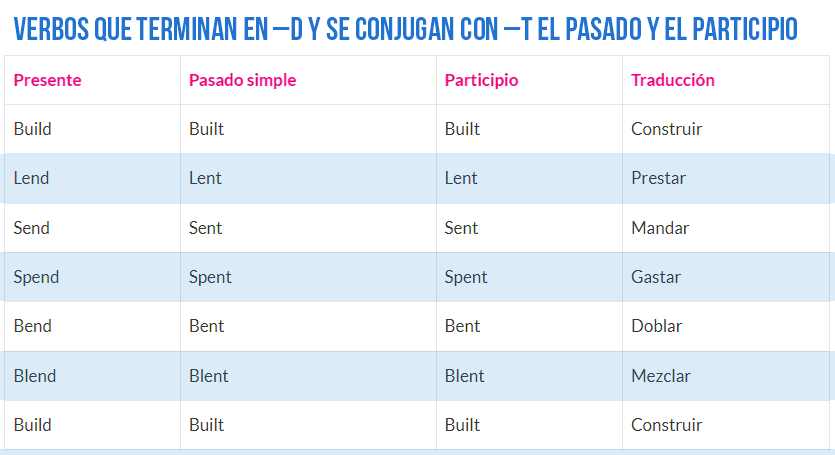

Lista de verbos irregulares en inglés
Los verbos irregulares en inglés suelen traer más de un dolor de cabeza a los estudiantes...
Verbos con infinitivo, pasado y participio iguales
| Presente | Pasado simple | Participio | Traducción |
|---|---|---|---|
| Cut | Cut | Cut | Cortar |
| Cost | Cost | Cost | Costar |
| Hit | Hit | Hit | Golpear |
| Let | Let | Let | Dejar |
| Put | Put | Put | Poner |
| Read | Read | Read | Leer |
| Split | Split | Split | Separar |
| Shut | Shut | Shut | Cerrar |
Por supuesto que hay muchos más verbos que estos...
Imágenes de los verbos irregulares más comunes
  Acerca del Autor
Fran Monaj
Soy Fran Monaj, profe de inglés, creador de vídeos y músico “amateur”...